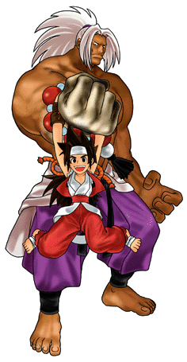

|
 |
| 投げ技＆組技 （相手に接近してコマンド入力） | |
| ★ 砕腕・壊撃 | Ａ＋Ｚ or Ｃ |
| 特殊技 | |
| ★ 砕拳・猛虎爪 |
 ＋Ｙ ＋Ｙ
|
| ★ 砕爪・断刃（中段技） | Ｙ＋Ｚ |
| ★ 砕腕・壊撃（ダウン投げ） | 相手ダウン中Ａ＋Ｚ or Ｃ |
| ★ 砕脚・震（ダウン攻撃） |
相手ダウン中 ＋Ｚ ＋Ｚ
|
| 奥義 | |
| ★ 白虎爪（昇華対応技） |
  ＋ＸorＹ ＋ＸorＹ
|
| ★ 白虎襲 |
＋Ｚ
|
| ／ 白虎襲（追加入力） |
白虎襲ヒット中＋Ｚ
|
| ★ 烈咆吼 |
 ＋Ｘ ＋Ｘ
|
| ★ 絶咆吼 |
＋Ｙ
|
| ★ 翡翠砕 |
＋ＸorＹorＺ
|
| ★ 金剛砕 |
＋Ｚ
|
| ★ 壊 |
金剛砕中＋Ｘ （Ｘで投げ抜け可） |
| ★ 握 |
金剛砕中＋Ｙ （Ｙで投げ抜け可） |
| ★ 潰 |
壊中＋Ｘ （Ｘで投げ抜け可） |
| ★ 烈 |
壊中＋Ｙ （Ｙで投げ抜け可） |
| ★ 昇 |
握中＋Ｘ （Ｘで投げ抜け可） |
| ★ 墜 |
握中＋Ｚ （Ｚで投げ抜け可） |
| ★ 轟震 | 壊 or 握中、追加入力無し |
| ★ 瑠璃砕 | 空中相手近くでＡ＋Ｚ or Ｃ |
| 超奥義 （パワーゲージ１本消費） | |
| ★ 暴虎馮河 |
＋(Ｘ＋Ｙ)orＢ
|
| ★ 勇往邁進 |
暴虎馮河ヒット中＋Ｙ
|
| ★ 驚天動地 |
暴虎馮河ヒット中＋Ｙ
|
| ★ 震天動地 |
壊中 ＋(Ｘ＋Ｙ)orＢ （Ｘ＋Ｙ or Ｂで投げ抜け可） |
| ★ 動天驚地 |
＋(Ｘ＋Ｙ)orＢ |
| ★ 因果応報 |
＋(Ｘ＋Ｙ)orＢ
|
| 潜在奥義 （パワーゲージ２本消費） | |
| ★ 怒髪衝天 |
握中＋Ｚ （Ｚで投げ抜け可） |
| ★ 不倶戴天 |
＋Ｙ
|
| 投げコンボ早見表 | ||
| 金剛砕 | 壊 | 潰 |
| 烈 | ||
| 震天動地 | 握 | 昇 |
| 墜 | ||
| 怒髪衝天 | ||
|
|